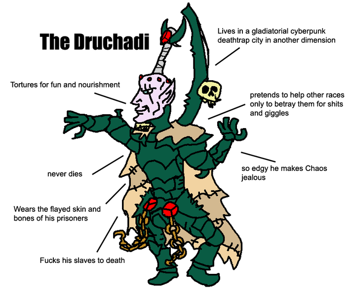
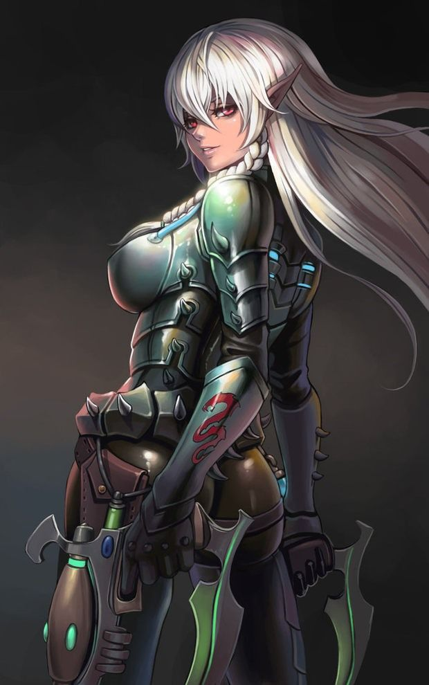

Dark Eldar

The Dark Eldar, referred to more correctly as the Drukhari or "Dark Ones" in the Aeldari Lexicon, are the forsaken and corrupt Aeldari kindred of the Craftworld Asuryani, an ancient and highly advanced alien race of fey humanoids.
The alternative term "Dark Eldar," or "Eladrith Ynneas" in the Aeldari tongue, was first coined by the Drukhari Archon and supreme overlord of Commorragh Asdrubael Vect in the 32nd Millennium.
The Drukhari's armies, like their Asuryani counterparts, usually have the advantages of mobility and advanced technology, though they are often lacking in resilience and numbers.
The Drukhari revel in piracy, enslavement and torture, and are sadistic in the extreme. Dark Eldar armies make use of various anti-gravity skimmers such as Raiders and Ravagers to launch high speed attacks.
They strike with little or no warning, using an interdimensional labyrinth known as the Webway to traverse the galaxy safely and far more quickly than most advanced starfaring species are able to with their Warp jumps.

The Drukhari are unique amongst the intelligent races of the Milky Way Galaxy because they do not live on a settled world or worlds, but rather the bulk of their population is concentrated in one foul city-state -- the Dark City of Commorragh -- that lies within the "ordered" Immaterium of the Aeldari Webway.
The Drukhari are mainly pirates and slavers who prey on targets across the galaxy to feed their unholy appetites for other sentient beings' souls, a terrible desire called "the Thirst," though they are sometimes used as mercenaries by other starfaring species.
The Drukhari are the living embodiments of all that is wanton and cruel in the Aeldari character. Highly intelligent and devious to the point of obsession, these piratical people revel in the physical and emotional pain of others, for feeding upon the psychic residue of suffering is the only way they can stave off the slow consumption by the Chaos God Slaanesh of their own souls.

The Drukhari, particularly their warrior castes, are tall, lithe, white-skinned humanoids. Their alabaster skin is death-like in its pallor, for there is no true life-giving sun within their dark realm to provide colour.
Their athletic bodies are defined by whipcord muscle, shaped and enhanced until they are physically stronger on average than their Craftworld Aeldari counterparts, as the Drukhari prize physical and martial prowess highly.
Yet for all their physical beauty by Human standards, the Drukhari are still repugnant monsters.
When viewed with the witch-sight of a psyker, the Drukhari's black souls are revealed, for they eternally thirst only for the anguish and torment of other thinking beings in order to fill their own infinite emptiness.
Unlike their Craftworld Aeldari cousins, the Drukhari do not integrate their still-powerful latent psychic abilities into their culture, and indeed have a great disdain for psykers of any kind.
This is because for the Drukhari, the use of psychic abilities would only further draw the attention of "She Who Thirsts" (Slaanesh) upon them, and their souls are already at risk enough of being devoured by the Prince of Chaos.